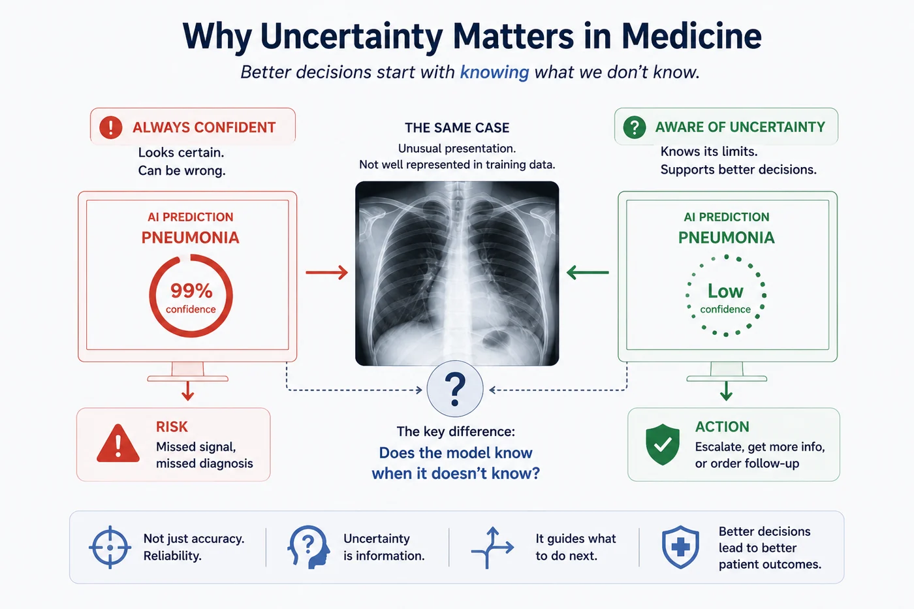
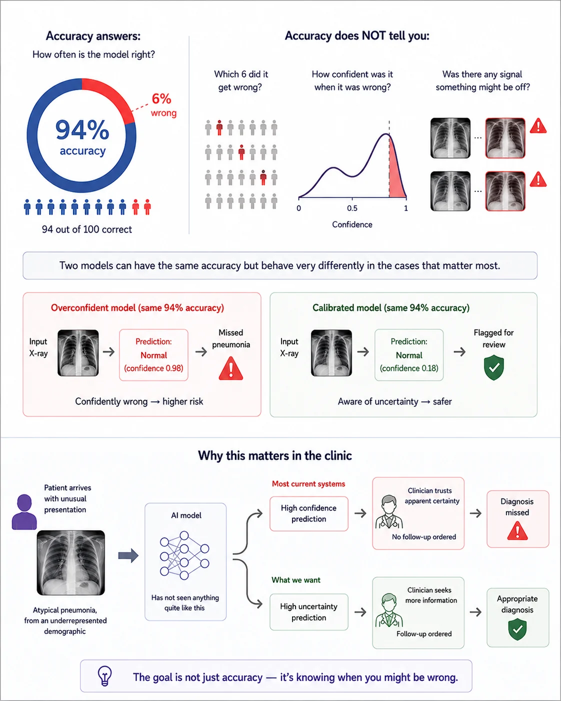
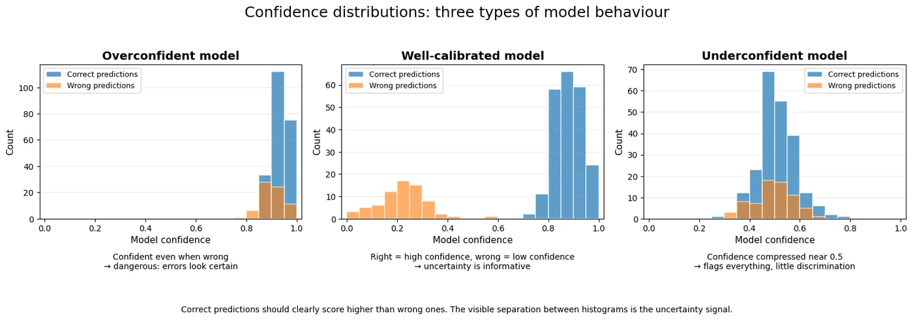
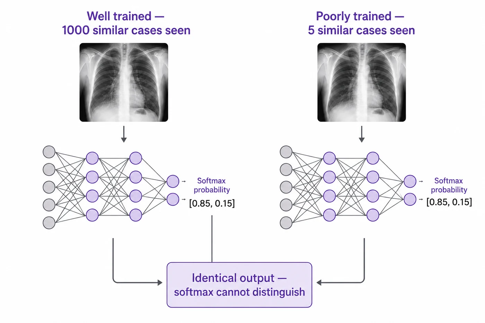
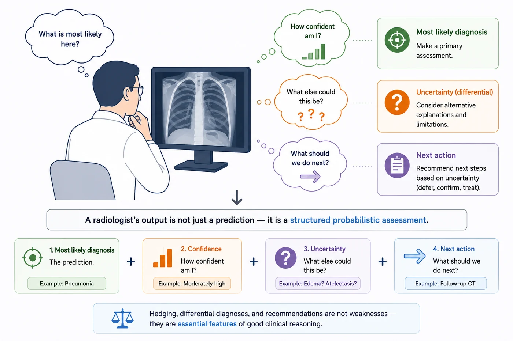
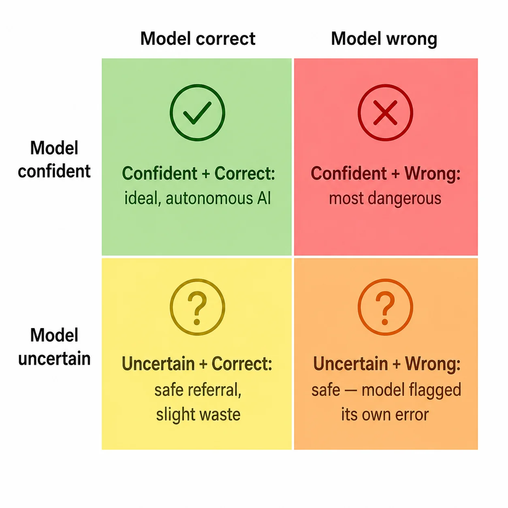

Session 1 — Why Uncertainty Matters in Medicine 🏥¶
Part 1 — Foundations
A model that is always confident is not a model you can trust. A model that knows when it doesn't know — that's a model that can support clinical decision-making.

What you'll learn in this session¶
- Why accuracy alone is not enough to evaluate a clinical AI model
- The two failure modes: overconfidence and underconfidence — and why they have different clinical consequences
- What softmax confidence actually measures — and what it doesn't
- What a model that can say "I don't know" would look like in practice
- Why uncertainty is information, not a weakness
This is the opening session of the course. It requires no mathematical background — just an interest in how AI systems behave in clinical settings, and a willingness to think carefully about what we actually want from them. The math and algorithms come later. First, we need to be clear about the problem.
🤔 1. What does accuracy actually tell you?¶
Imagine a chest X-ray classifier that achieves 94% accuracy on its test set. That sounds impressive — and in many machine learning contexts, it would be. But let's think more carefully about what that number says and what it doesn't.
94% accuracy means the model gets 94 out of 100 predictions right. But it says nothing about which 6 it gets wrong, how confident it was when it was wrong, or whether there was any signal that something might be off on those cases. The model that scores 94% and confidently misclassifies 6 pneumonia patients as normal, and the model that also scores 94% but flags those 6 cases with high uncertainty so they go to a radiologist — these are radically different systems. But accuracy treats them identically.
This is the central problem this course addresses. Accuracy tells you how often a model is right. It does not tell you whether the model knows when it might be wrong. For most software applications, that distinction doesn't matter much. For clinical decision support, it's everything.
A radiologist's instinct
A chest X-ray is not just "normal" or "abnormal." A radiologist looks for pattern, context, and uncertainty at the same time. They may say: "This is probably pneumonia, but the distribution is atypical and I would want a follow-up image or more clinical information before I feel fully comfortable." That extra sentence is not fluff. It is part of the decision.
That is the kind of behavior we want from AI systems: not just a label, but a judgment that knows when to hesitate.
🏥 A concrete scenario
A hospital deploys a pneumonia screening model in its emergency department. The model reviews chest X-rays and produces a probability score. On the day of deployment, a patient arrives with an unusual presentation — mild viral pneumonia with atypical distribution, from a patient demographic underrepresented in the training data. The model has never seen anything quite like this. What does it do? In most current systems: it produces a confident-looking score anyway, because that's all it knows how to do. The clinician, trusting the model's apparent certainty, proceeds without ordering a follow-up. The diagnosis is missed.The failure wasn't in the model's accuracy on typical cases. It was in the model's inability to signal that this case was unusual.

Two AI models can achieve identical accuracy while behaving very differently in clinically important cases. Accuracy measures how often a model is correct, but it does not indicate whether the model recognizes unusual or unreliable cases. In healthcare, the ability to signal uncertainty can be as important as accuracy itself.
⚡ 2. The two failure modes¶
When we talk about uncertainty in clinical AI, there are two distinct failure modes to keep in mind. They are different in character and have different clinical consequences.
🔴 Overconfidence¶
An overconfident model says it's 95% sure when it should be 60% sure. It presents its predictions with more certainty than the evidence warrants. This is the more dangerous of the two failure modes in clinical settings, because:
- Clinicians who trust the model's stated confidence calibrate their behaviour to it. If the model says 95%, they may not order further tests, seek a second opinion, or apply the clinical scepticism they'd normally bring to an ambiguous case.
- Overconfident errors are invisible — the model doesn't flag them. A busy ED physician reviewing 40 scans per shift may not have time to scrutinize every confident prediction.
- Over time, overconfidence erodes trust when errors surface — and the trust damage is often disproportionate to the error rate.
Modern deep networks are systematically overconfident. This is not a coincidence — it is a consequence of how they are trained. Cross-entropy loss encourages the model to push predicted probabilities toward 0 and 1. Large models with plenty of capacity learn to produce very extreme softmax outputs.
🟡 Underconfidence¶
An underconfident model flags everything as uncertain — it hedges on every case, never committing to a diagnosis. This is less dangerous than overconfidence but still clinically costly:
- If the model refers 70% of cases to a radiologist, it provides minimal value over having no AI system at all.
- Clinicians learn to ignore the uncertainty flags because they're not discriminative — everything gets flagged.
- The model never provides the high-confidence, low-workload throughput that is one of the main arguments for AI in radiology.
The clinical ideal is a model that is confidently right on easy, clear cases and honestly uncertain on hard, ambiguous ones. That's a much harder target than simply being accurate.

This figure shows why confidence alone is not enough, and why the shape of the confidence distribution matters. In the overconfident case, the model gives high confidence even when it is wrong, so mistakes look trustworthy. In the well-calibrated case, correct predictions cluster at high confidence while wrong ones are pushed lower, which makes uncertainty informative. In the underconfident case, both correct and wrong predictions cluster near the middle, so the model fails to separate easy cases from hard ones. For clinical use, the ideal is not just high confidence, but confidence that actually means something.
🎭 3. The softmax illusion¶
Most deep learning classifiers end with a softmax layer. The softmax takes the raw output of the network (called logits) and converts them into a set of numbers that sum to 1 — so they look like probabilities. When a chest X-ray classifier outputs $[0.93, 0.07]$ for $[\text{Normal}, \text{Pneumonia}]$, it's easy to read this as: the model is 93% confident this is normal.
But this is misleading in at least two important ways.
The softmax is not a posterior probability. It measures how much the model prefers one class over another given the input — but it has no mechanism for saying "I'm not sure about this input at all." Even for a completely novel input — one unlike anything in the training set — the softmax still outputs numbers that sum to 1. It always distributes its confidence across the classes, even when the right answer is "none of the above."
The softmax doesn't represent model uncertainty. It represents the model's preference between classes, given its current weights. Two models with completely different weights — one well-trained, one randomly initialized — can produce identical softmax outputs on the same input. The softmax output carries no information about whether the model is well-calibrated, well-trained, or appropriate for this type of input.
Think of it this way: if you ask someone to choose between two options and give you a percentage split, they can always give you 60/40 or 70/30 — even if they have absolutely no basis for the choice. The softmax is the same. It always gives you a split. It never says "I really don't know."
This is the fundamental limitation that motivates everything in this course.

This figure makes a more specific point: two models can produce the same softmax output, like [0.85, 0.15], even if one was trained on about 1000 similar cases and the other on only 5. The output alone does not tell us how much evidence the model has seen or whether it is well learned. That is the illusion: softmax gives the same-looking confidence even when the underlying training situation is completely different.
🩺 4. What does a radiologist actually do?¶
Before we think about what we want an AI model to do, it helps to think about what a skilled radiologist does — because good clinical reasoning is the benchmark we're reaching toward.
A radiologist reading a chest X-ray does not produce a single binary verdict. They produce a structured probabilistic assessment. They say things like: "This is most consistent with pneumonia, though I can't rule out pulmonary edema. The distribution is atypical — I'd recommend a follow-up CT." Or: "This is a clear case of right lower lobe consolidation. High confidence pneumonia."
Several things are happening simultaneously:
- They produce a most likely diagnosis (the prediction)
- They assess how confident they are in that diagnosis (the certainty)
- They identify what could be wrong with their assessment (the uncertainty)
- They recommend a next action based on that uncertainty (defer, confirm, treat)
The key point: the radiologist's uncertainty is not separate from their diagnostic output — it is part of the output. A radiology report that said only "Pneumonia: yes" would be considered incomplete and unprofessional. The hedging, the differential, the recommendation — those are features, not weaknesses.
This is the standard we want AI systems to meet. Not just a prediction, but a prediction with an honest, calibrated sense of how much to trust it.

Rather than producing a binary decision, radiologists integrate diagnostic likelihood, confidence, differential diagnoses, and management recommendations into a single probabilistic assessment.
💡 5. Uncertainty is information, not a weakness¶
There is a temptation — particularly in commercial AI deployment — to suppress uncertainty estimates. A model that says "I'm not sure" seems less capable than one that always gives a confident answer. In a product demo, certainty is reassuring.
In clinical practice, this instinct is backwards.
A model that says "I'm not sure" on the right cases is doing something genuinely useful. It is identifying the cases that need human attention. It is doing triage — sorting the cases where it can be trusted from the cases where it cannot. That is a valuable clinical function.
Consider the alternative: a model that is always confident. Every case gets a decisive prediction. Clinicians must evaluate every prediction with equal scepticism because there is no signal about which cases are reliable. The model has given up its ability to communicate anything about its own reliability. The cognitive load on the clinician is unchanged.
Now consider a model that correctly flags its uncertainty on 15% of cases and routes them to a radiologist. The other 85% can be processed with high confidence. Workflow efficiency improves. Errors concentrate in the 15% that gets expert review. The model is functioning as a first reader with self-awareness — a much more useful clinical tool than one that pretends to certainty it doesn't have.
This is the vision that motivates the rest of this course. Uncertainty is not the enemy of clinical AI. It is one of its most important features — when it is measured well, communicated honestly, and used to guide action.
🏥 Clinical framing
In aviation, autopilot systems are designed to alert pilots when they are near the edge of their operating envelope — when conditions are unusual enough that human judgement is needed. This is not a failure of the autopilot; it is a deliberate design feature. Clinical AI should work the same way: autonomous within its competence, and explicit about the boundaries of that competence.

In clinical AI, the goal is not merely accuracy but knowing when not to trust the model. Confident errors can directly harm patients, whereas uncertain predictions provide an opportunity for human review and additional testing.
📚 6. Recommended reading¶
The papers below include one of the most widely cited general reviews of deep-learning UQ and several widely used reviews focused specifically on medical image analysis. They are useful maps of the field rather than papers you need to read line by line at this stage.
A Review of Uncertainty Quantification in Deep Learning: Techniques, Applications and Challenges
Abdar et al., 2021
A highly cited broad review of UQ in deep learning. It covers Bayesian approaches, ensembles, calibration, applications, and open challenges, including medical image classification and segmentation.
Trustworthy Clinical AI Solutions: A Unified Review of Uncertainty Quantification in Deep Learning Models for Medical Image Analysis
Lambert et al., 2022
A medical-imaging-specific review that connects UQ methods to clinical constraints, validation protocols, image quality variation, and the practical question of whether uncertainty estimates are useful to end users.
A Review of Uncertainty Estimation and its Application in Medical Imaging
Zou et al., 2023
A focused survey of aleatoric and epistemic uncertainty, estimation methods, medical-imaging applications, and future research directions. This is a strong companion reading for the methods taught later in the tutorial.
A Review of Uncertainty Quantification in Medical Image Analysis: Probabilistic and Non-Probabilistic Methods
Huang et al., 2023
A broader medical-image-analysis review that includes both probabilistic and non-probabilistic approaches, along with uncertainty evaluation protocols and applications across different imaging tasks.
✅ Session summary¶
| Concept | Key takeaway |
|---|---|
| 📊 Accuracy | Measures how often the model is right — says nothing about when it might be wrong |
| 🔴 Overconfidence | More dangerous — confident errors are invisible, clinicians overtrust the model |
| 🟡 Underconfidence | Less dangerous but less useful — the model flags everything, no discrimination |
| 🎭 Softmax illusion | Softmax always produces a confident-looking distribution — even on novel inputs |
| 🩺 Radiologist standard | Uncertainty is part of the clinical output — not a weakness, a feature |
| 💡 Uncertainty is information | A model that abstains on the right cases provides more clinical value |
➡️ Next: Session 2 — Aleatoric vs Epistemic Uncertainty
Not all uncertainty is the same. Some of it can be reduced with more data. Some of it cannot — it is irreducible noise in the world. Understanding which type you're dealing with changes the clinical response entirely.